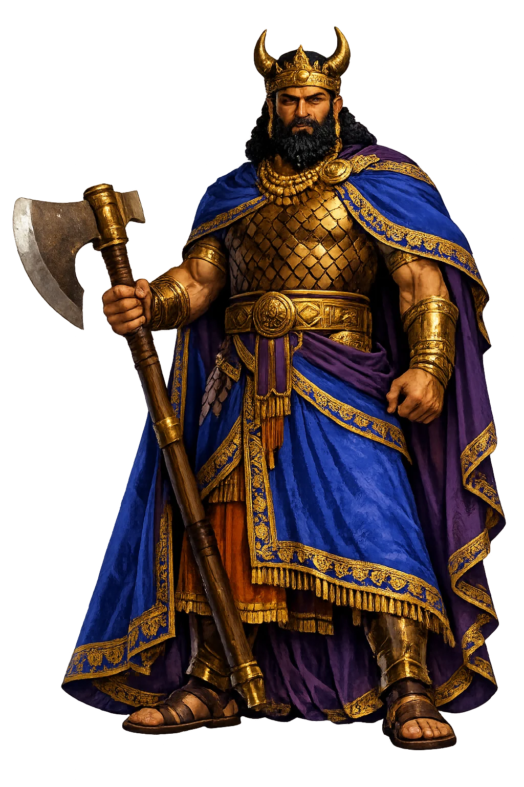
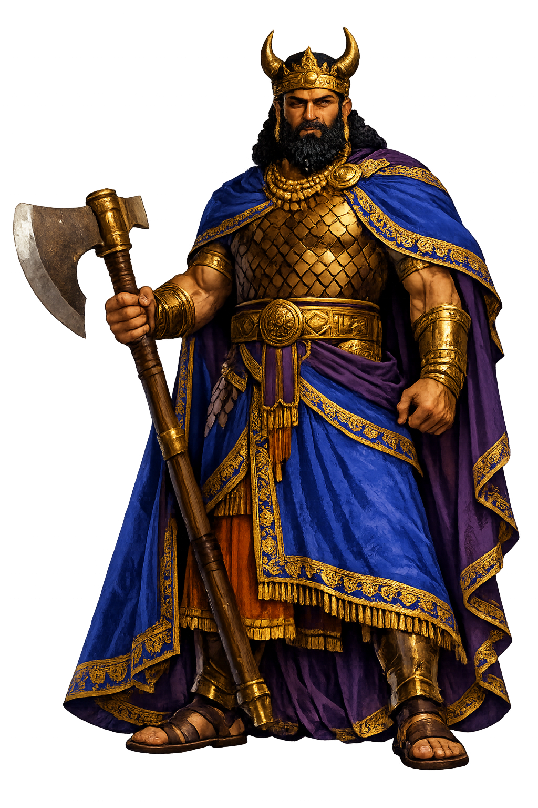

The Authentic Orthography
Hero, King of Uruk · King of Uruk · He Who Saw the Deep

Unicode restoration and ASCII comparison
𒄑𒂆𒈦
The name in its original Mesopotamian form. Gilgameš (𒄑𒂆𒈦) is attested in the source tradition — “The old man became young”. Its original diacritics and script distinctions carry the full phonetic and orthographic weight of the source tradition.
gilgamesh
Reduced to plain gilgamesh, the name loses everything that made it specific: original diacritics and script distinctions. What remains is an ASCII string that machines can parse but that no longer speaks with its original voice.
Gilgameš
The Unicode restoration recovers what ASCII flattened. Gilgameš restores original diacritics and script distinctions, returning the name to its original written dignity. The domain encodes to Punycode, but the browser displays the truth.
Gilgameš.com → xn--gilgame-wqb.com
The non-ASCII characters in Gilgameš are encoded while the ASCII remains visible. To the DNS, it is Punycode. To humanity, it is Gilgameš.
How Gilgameš travels from ancient script to the modern URL
The Sumerian royal name Gilgameš is of uncertain etymology; it has been explained as “old man who became young" or as a shortened theophoric name.
How Gilgameš was spoken
Kingship, Friendship, and the Quest Against Death
Gilgameš, king of Uruk, 'two-thirds god and one-third man', is the hero of the oldest great epic we possess. He builds walls, slays the guardian of the Cedar Forest, spurns a goddess, loses his friend, and walks to the end of the world to ask the flood's survivor the only question that matters: must we die?
The epic opens and closes on the walls he built — 'go up on the wall of Uruk and walk around' — kingship as masonry.
Enkidu, the wild man fashioned from clay to match him; their friendship is the first great love story of literature.
The road west to the Cedar Forest and the slaying of Humbaba, its monstrous guardian — fame won at the price of doom.
Utnapishtim's ark, the waters of death, and the plant 'the old man becomes young', stolen by a serpent while the king slept.
Stories of Gilgameš
The Standard Babylonian epic, 'He who saw the deep', runs from the streets of Uruk to the waters of death. Its twelve tablets hold the first full arc of friendship, loss, and wisdom in world literature.
Uruk groans under its restless young king, and the gods answer by fashioning Enkidu from clay — a wild man who runs with gazelles and frees the trapper's game. The harlot Šamhat civilizes him with bread and beer; he comes to Uruk and blocks Gilgameš at the wedding-house door. They wrestle until the doorframe shakes, and the struggle ends in embrace: from that day the king has a second self.
Hungry for a lasting name, Gilgameš proposes the expedition to the Cedar Forest, where the monstrous Humbaba guards the trees for the god Enlil. Through dream-omens and terror the two friends go on; with the aid of Šamaš's thirteen winds they bring Humbaba down and fell the great cedar. The glory is real — and fatal. For this, and for the spurned Ištar's Bull of Heaven, the gods decree that one of the two must die: Enkidu sickens, and dies.
Clothed in a lion's skin, Gilgameš wanders beyond the world: through the twin mountain where scorpion-men guard the sun's road, along the tunnel of darkness to the garden of jeweled trees, to Šiduri the ale-wife, who tells him what every wisdom text will say after her — eat, drink, hold your child's hand. He crosses the waters of death with the ferryman Ur-šanabi and finds Utnapishtim, the flood's survivor, who tells him the story of the ark and sets him the test of staying awake. He fails.
Utnapishtim gives him one last chance: a thorny plant at the bottom of the sea, 'the old man becomes young'. Gilgameš ties stones to his feet, dives, and wins it — then stops to bathe at a pool, and a serpent smells the plant, takes it, and sheds its skin. The king sits down and weeps. Then he returns to Uruk, brings Ur-šanabi up onto the wall, and shows him the brickwork: this, the epic says, is what a man leaves.
The epic of Gilgameš begins with a wall and ends with a wall, and between them lies the whole education of a human being. At first the king believes what strong young kings believe: that the enemy is distance — the Cedar Forest, the far shore, the undying man beyond the sea. Each victory over distance only brings the real enemy closer, until it stands in his own bedchamber: the fact that he will die. The scorpion-men, the ale-wife, the ferryman, and the flood-hero all tell him the same thing in different voices, and he cannot hear it until the serpent takes the plant. Only then, weeping at the water's edge, does he become the hero of wisdom rather than of strength.
Enter Extended Lore